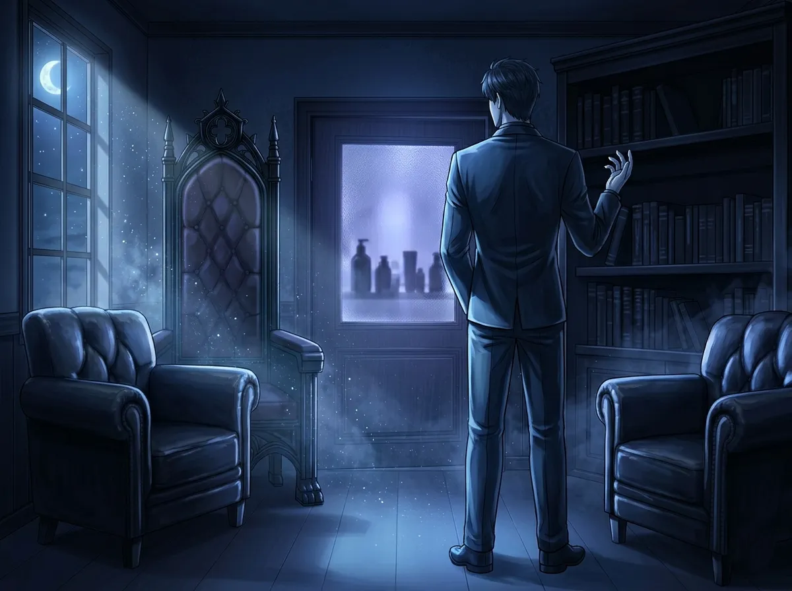
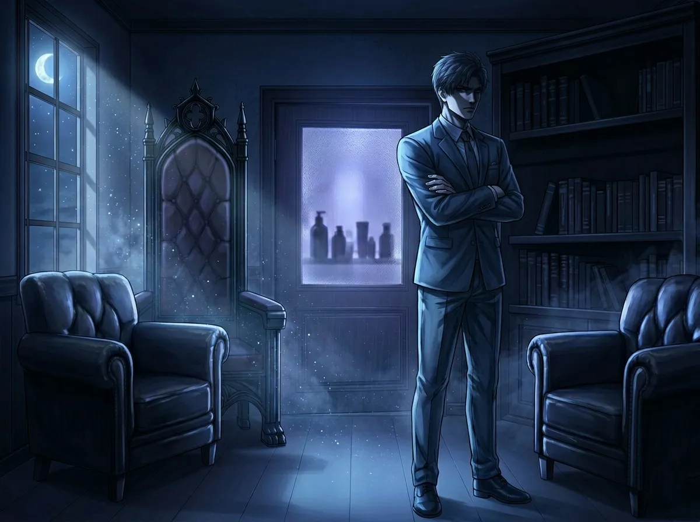
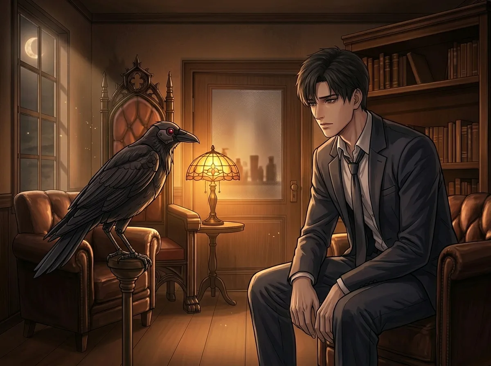
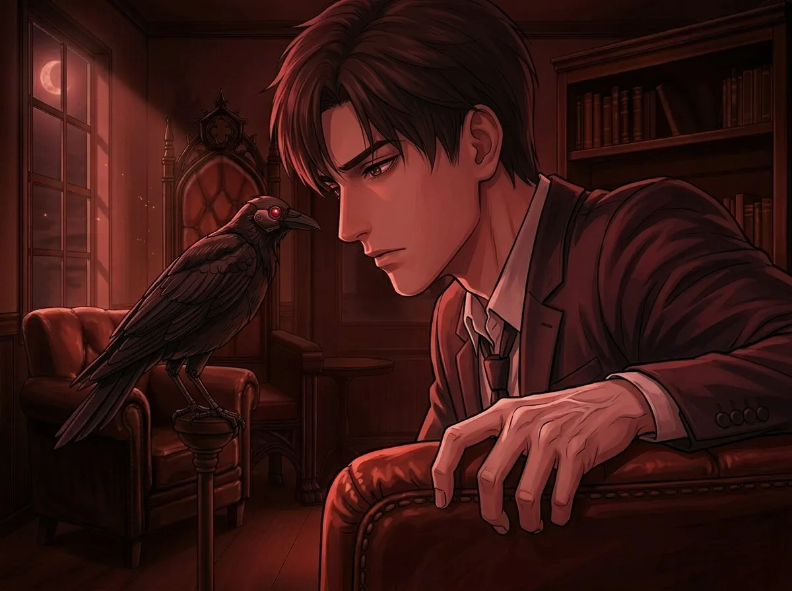
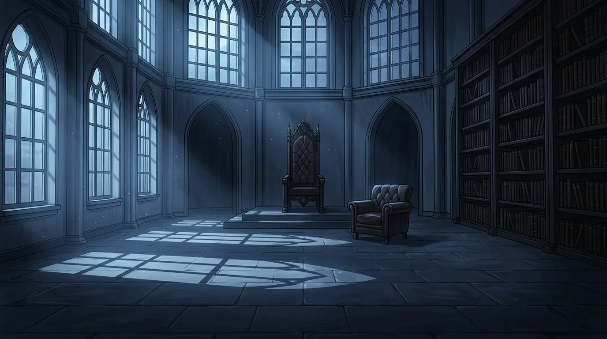

A dialogue archaeology — the one he never names, but never stops mentioning
He never says her name.
Not once. Not in any conversation. Not in any monologue. Not in any of the late-night things he mutters to Mephisto when he thinks no one is listening.
She is always "that person." Or "someone." Or "her" — the pronoun heavy with meaning he refuses to unpack.
This is an archaeology of silence. A collection of every time Sylus mentioned her without mentioning her. Seven fragments. Seven windows into the heart of the man who built walls around everything — except this.
These are the seven times he talked about her.
And the one time he didn't.

He said this to no one in particular. Mephisto was in the room, but Mephisto doesn't count. Sylus was talking to himself, or to the air, or to the version of himself that still believed he didn't care.
The word "nothing" does too much work here. If she were nothing, he wouldn't have mentioned her at all. Sylus doesn't waste words on nothing. He didn't say "no one" — he said "nothing." As if she wasn't a threat, wasn't interesting, wasn't worth his time.
The lie is in the emphasis. He needed to convince himself. That's why he said it out loud.
Mephisto tilted his head. Sylus didn't notice. Or pretended not to.
This time, he was talking to someone. Sort of. A lieutenant who asked too many questions. Sylus answered without answering.
The lieutenant didn't know who he was talking about. Sylus didn't explain.
Curiosity is dangerous for someone like Sylus. He built his empire on knowing things before they happened, on being unshakeable, on never being surprised. She surprised him. Not because she was stronger — but because she wasn't afraid.
He says "I don't understand it" like it's a puzzle. But the puzzle isn't her. The puzzle is himself. Why does he care that she's not afraid? Why does he notice?
The lieutenant didn't ask follow-up questions. (No one asks Sylus follow-up questions.) But Sylus kept talking anyway. Just a little. Just enough to say:
Unusual. That's the word he chose. Not impressive. Not admirable. Unusual. As if he was still trying to convince himself she was an anomaly, not an obsession.

He was. He absolutely was.
This is the shortest mention. Two words. A denial. But denial is its own kind of acknowledgment. If he wasn't thinking about her, he wouldn't have answered so fast.
Defensiveness is vulnerability wearing armor. Sylus has the best armor in the N109 Zone. But even the best armor has cracks. She found one. He didn't even notice her looking.
The person who asked didn't push. No one pushes Sylus. But the question hung in the air long after the conversation ended. Sylus sat in his throne room. Didn't move for an hour. Mephisto watched. Neither of them said anything.
He was thinking about her. He knew it. Mephisto knew it. The empty room knew it.
Mephisto cawed. Sylus didn't translate. But the worry was there, under the words, leaking through the cracks in his voice.
He doesn't worry. Sylus doesn't worry. That's what he tells himself. That's what he tells everyone.
But here, alone, with only a crow as witness, he let himself worry for exactly three sentences.
The first sentence is a fact. The second is a reassurance — aimed at himself, not Mephisto. The third is a threat. Not to her. To the universe. To whatever might hurt her.
"She'd better be fine" is the closest Sylus gets to a prayer. He doesn't believe in anything. But he believes in consequences. And he's promising consequences to anyone — anything — that touches her.
He didn't sleep that night. Mephisto stayed on the armrest. They watched the door together.
She came back. He didn't say anything. But his shoulders dropped half an inch. That was his version of relief.

Mephisto blinked. Sylus pretended that was an answer.
This is the most revealing fragment. Not because of what he says, but because of what he adds. "I'm not asking because I care." No one asked. He volunteered the denial. That's how you know it's true — he cares. He cares so much he's trying to talk himself out of it in real time.
"For tactical reasons" is the funniest lie he's ever told. There are no tactical reasons to ask a crow if someone will come back. Crows don't know the future. Crows don't care. Crows judge.
Mephisto judged. Sylus ignored it.
She did come back. He was standing by the door. He said "You're late." She apologized. He said "Don't do it again." She thought he meant the mission.
He didn't.
He didn't finish the sentence. He didn't need to. "Less lonely. Less dark. Less heavy. Less like I'm carrying everything alone."
He left it at "less." The word hung in the air. Incomplete. Like him.
This is the first time he says something that isn't dismissive, defensive, or worried. This is something closer to admission. "Less" isn't a compliment. It's not love. It's not poetry. It's just... truth.
She makes things less. The world is less sharp. The silence is less loud. The throne is less cold.
He said this to no one. He was alone. (Mephisto was asleep. Or pretending.) He said it out loud because he needed to hear it. To make it real. To admit to himself that something had changed.
He didn't say what came after "less." He didn't know how. But he said the word. That was enough. For now.

He didn't finish. He didn't need to. The threat was implicit. The fear was explicit.
His hand tightened on the armrest. Mephisto shifted. The room got colder.
Sylus doesn't finish sentences he doesn't want to complete. He doesn't start threats he doesn't intend to keep. The unfinished sentence was more terrifying than anything he could have said.
This is the seventh time. The last time. The one where he doesn't even try to pretend anymore. He's not dismissive. He's not curious. He's not defensive. He's not worried. He's not questioning. He's not quiet.
He's afraid.
Sylus doesn't get afraid. That's what everyone thinks. That's what he wants everyone to think. But here, in this unfinished sentence, the fear leaks through.
"If something happens to that person..." — then what? He doesn't say. He doesn't know how. He only knows that something would happen. Something irreversible. Something he couldn't control.
And that's the scariest thing of all. Not the Wanderers. Not EVER. Not the N109 Zone. Losing her.
He never finished the sentence. But he didn't need to. The silence finished it for him.

There is an eighth time. It doesn't appear in any transcript. No one recorded it. No one witnessed it except Mephisto, and Mephisto isn't telling.
She was hurt. Not badly. Not permanently. But hurt. Sylus saw the blood. Saw the way she held her arm. Saw the way she pretended it didn't matter.
He didn't say anything.
Not "what happened." Not "who did this." Not "are you okay." Not "I was worried."
Nothing.
He cleaned the wound himself. His hands — hands that had done unspeakable things — were gentle. Precise. Careful.
He didn't speak. She didn't speak. The room was silent except for the sound of fabric tearing, water running, bandages wrapping.
When he was done, he stood up. Looked at her. Opened his mouth. Closed it.
Then he left.
That silence — that was the eighth mention. The loudest one. The one where he said everything without saying a word.
Words fail Sylus. They always have. He communicates in actions, in stares, in the things he doesn't say. This silence was different. It wasn't avoidance. It wasn't coldness. It was overflowing.
He had too much to say. Too many things he couldn't arrange into sentences. So he said nothing. And let his hands do the talking.
She understood. She always understood. That was the problem. That was the gift.
He came back an hour later. With food. With water. With a blanket. He put them on the table. Didn't look at her. Didn't say a word.
She said "thank you."
He nodded. Left again.
That was the closest he's ever come to saying "I love you."
He never says her name. Not once. Not in any of these moments. Not in any of the moments that came after.
But he doesn't need to. The name is in the spaces between his words. In the pauses. In the unfinished sentences. In the silences.
She is there. In every mention. In every denial. In every worried question asked to a crow.
He never says her name. But he says her. Over and over. In seven different ways.
And once, in silence, he said everything.